Auf einen Blick
Der Pool ist der Dreh- und Angelpunkt: Aufgaben kannst du jederzeit anlegen, eingeteilt werden kann aber nur, wer im Pool der Veranstaltung steht.
Was du als Teamleiter darfst
| Eigene Veranstaltung | Co-Leitung | Vorlage | |
|---|---|---|---|
| Aufgaben, Gruppen, Serien, Pool, Einteilung, Notizen | ja | ja | nur ansehen |
| Name, Datum, Tage ändern, löschen, duplizieren | ja | nein | nein |
| Als Vorlage vorschlagen | ja | nein | – |
| Daraus eine neue Veranstaltung machen | Duplizieren | – | Vorlage verwenden |
Veranstaltungen anderer Teamleiter siehst du nicht, solange sie dich nicht als Co-Teamleiter eintragen.
Erste Schritte
Melde dich mit deinem Namen und Passwort an; Groß- und Kleinschreibung beim Namen spielen keine Rolle. Mit Eingeloggt bleiben bleibst du angemeldet, bis du dich abmeldest – sonst nur, solange die App offen ist.
Nach der Anmeldung landest du in der Übersicht deiner Veranstaltungen:

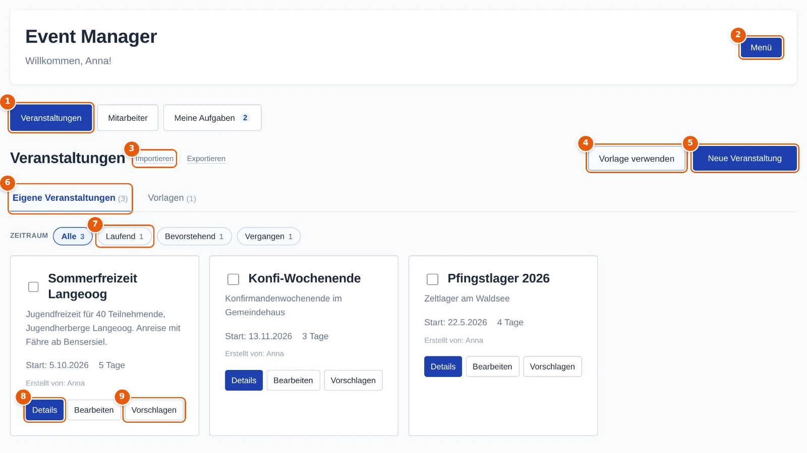
- Hauptreiter – Veranstaltungen, Mitarbeiter und Meine Aufgaben. Den dritten Reiter siehst du nur, wenn du selbst irgendwo eingeteilt bist; die Zahl daran sind deine offenen Aufgaben.
- Menü – Farbschema, Schriftgröße und Abstand, Einstellungen, Passwort ändern, Abmelden. Am Handy ist es das ☰-Zeichen.
- Importieren / Exportieren – Veranstaltungen als CSV-Datei, auf Wunsch mit ihren Aufgaben.
- Vorlage verwenden – eine neue Veranstaltung aus einer Vorlage anlegen.
- Neue Veranstaltung – eine Veranstaltung von Grund auf anlegen.
- Unterreiter – Eigene Veranstaltungen, Co-Leitung (wo du mitleitest) und Vorlagen. Am Handy ist das eine Auswahlliste.
- Zeitraum – nur laufende, bevorstehende oder vergangene Veranstaltungen zeigen. Laufende stehen immer oben.
- Details – die Veranstaltung öffnen.
- Vorschlagen – die eigene Veranstaltung der Verwaltung als Vorlage vorschlagen.
Mit dem Häkchen links auf einer Karte wählst du Veranstaltungen aus, um mehrere auf einmal zu löschen oder zu exportieren.
Veranstaltungen
Eine Veranstaltung legst du mit Neue Veranstaltung an; Name, Startdatum und Anzahl der Tage sind Pflicht. Du stehst danach automatisch als Leitung drin und bist im Mitarbeiter-Pool.

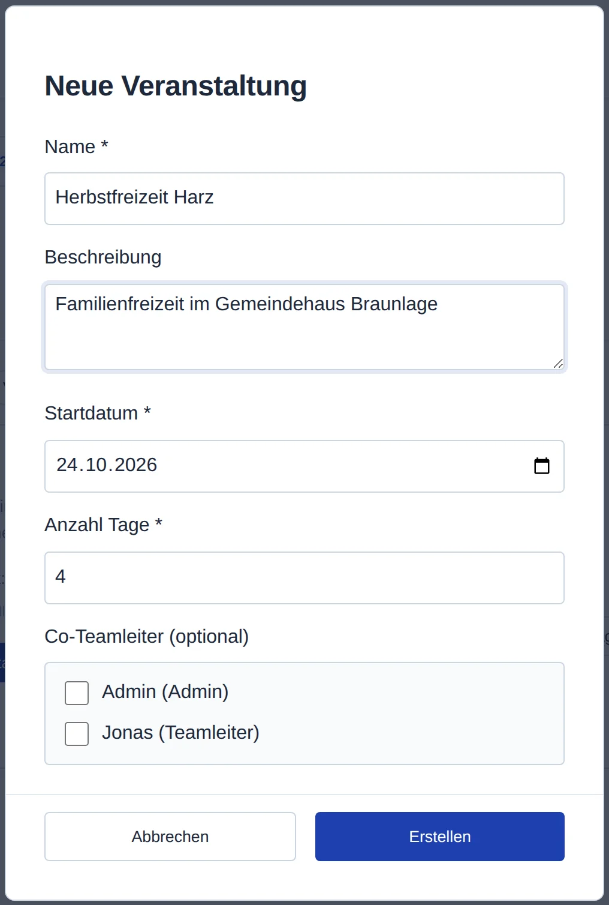
Co-Teamleiter sind weitere Teamleiter oder Admins, die mitleiten. Sie sehen die Veranstaltung unter Co-Leitung und dürfen alles rund um Aufgaben, Pool und Notizen. Name, Datum und Löschen der Veranstaltung selbst bleiben bei dir als Ersteller.
Schneller starten
| Weg | Wo | Was übernommen wird |
|---|---|---|
| Vorlage verwenden | Startseite, Knopf Vorlage verwenden | Aufgaben, Aufgabengruppen, Serien (ohne Mitglieder) |
| Duplizieren | Veranstaltung → Aktionen → Duplizieren | dasselbe aus einer eigenen Veranstaltung |
| Als Vorlage vorschlagen | Startseite, Vorschlagen auf der Karte | ein Admin entscheidet, ob daraus eine Vorlage wird |
Nie mitkopiert werden Menschen (Pool, Zuweisungen, Serien-Teams) und Notizen; alle Aufgaben starten wieder als Offen. Du selbst bist in der neuen Veranstaltung automatisch Leitung und im Pool – wie beim Anlegen.
Was du ändern darfst
- Bearbeiten und Löschen gehen nur bei Veranstaltungen, die du selbst angelegt hast. Gelöscht wird im Bearbeiten-Dialog oder über die Häkchen auf der Startseite.
- Vorlagen kannst du verwenden, aber nicht ändern oder löschen; das macht ein Admin.
- Eine als Vorlage vorgeschlagene Veranstaltung kannst du nicht mehr löschen.
Die Veranstaltungsseite
Über Details öffnest du eine Veranstaltung. Oben stehen ihr Kopf und der Mitarbeiter-Pool, darunter die Aufgaben.

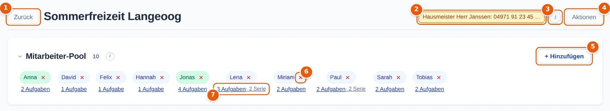
- Zurück zur Übersicht.
- Notiz zur Veranstaltung – der Anfang deiner Notiz; ein Klick zeigt sie ganz, dort kannst du sie bearbeiten. Ohne Notiz steht hier ein ✎. Mehr unter Notizen der Leitung.
- i – Dauer, Zeitraum und Beschreibung aufklappen.
- Aktionen – Bearbeiten und Duplizieren (siehe Bild unten).
- + Hinzufügen – Leute in den Pool holen.
- ✕ – jemanden aus dem Pool nehmen.
- Aufgabenzahl – öffnet die Aufgaben dieser Person; 2 Serie heißt: zwei davon kommen über eine Serie.

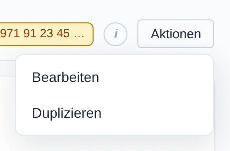
Der Mitarbeiter-Pool
Nur wer im Pool ist, kann Aufgaben dieser Veranstaltung bekommen – der Pool ist also immer der erste Schritt. Grüne Namen sind Leitung (Teamleiter oder Admin), blaue sind Mitarbeiter. Ein Klick auf die Überschrift klappt den Pool zu.

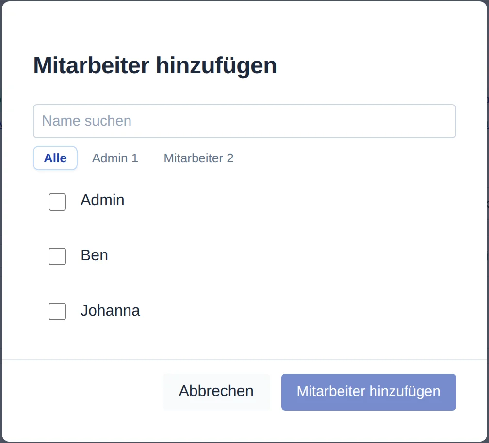
Im Dialog Mitarbeiter hinzufügen suchst du nach Namen und filterst nach Rolle. Wer im selben Zeitraum schon bei einer anderen Veranstaltung eingeplant ist, steht mit dem Hinweis darauf in der Liste; Frei im Zeitraum blendet diese Leute aus.

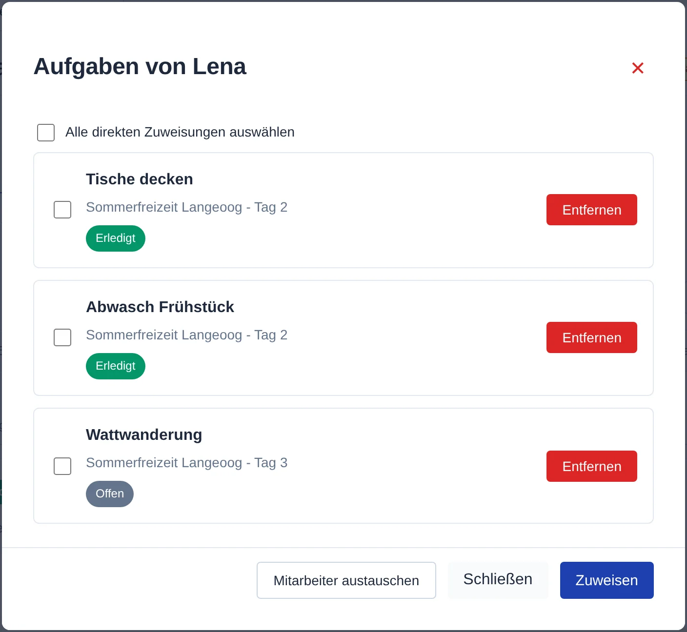
Ein Klick auf die Aufgabenzahl zeigt alles, was eine Person in dieser Veranstaltung hat:
- Entfernen nimmt ihr eine einzelne Aufgabe ab; mit den Häkchen geht das für mehrere auf einmal.
- Zuweisen gibt ihr weitere Aufgaben, gefiltert nach Tag und offenen Aufgaben.
- Mitarbeiter austauschen überträgt ihre Aufgaben an jemand anderen aus dem Pool – etwa wenn jemand krank wird.
Nimmst du jemanden mit offenen Aufgaben aus dem Pool, fragt die App, wer sie übernimmt. Du kannst sie übertragen oder die Zuweisungen aufheben.
Am Handy

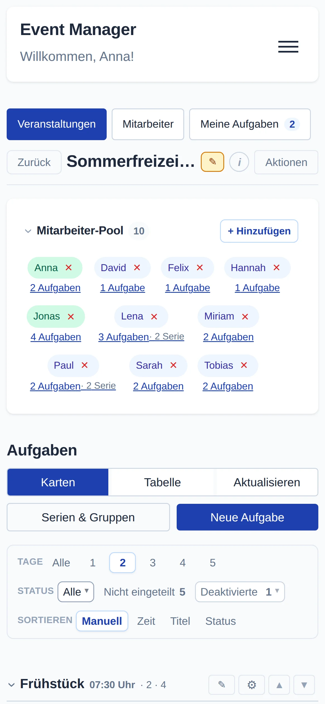
Am Handy ist alles da, nur enger: der Name wird gekürzt, die Notiz ist das gelbe ✎, und an Gruppen steht statt Bearbeiten ein ⚙.
Aufgaben anlegen und bearbeiten
Neue Aufgabe öffnet ein leeres Formular, Bearbeiten an einer Aufgabe dasselbe Formular mit ihren Werten. Pflicht sind nur Titel und Tag.

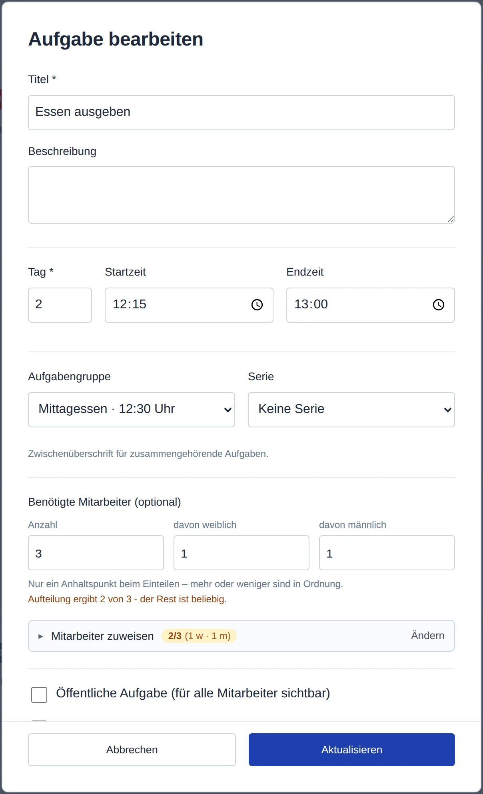
| Feld | Wofür |
|---|---|
| Titel, Beschreibung | Was zu tun ist. Die Beschreibung sehen alle Eingeteilten. |
| Tag | Der Tag der Veranstaltung (1, 2, 3 …), nicht das Datum. |
| Startzeit, Endzeit | Das Zeitfenster. Erinnerungen richten sich nach der Startzeit; nach der Endzeit kann eine Aufgabe überfällig werden. |
| Geplante Zeit | Erscheint nur ohne Start- und Endzeit – ein einzelner Zeitpunkt wie „Nachtruhe 22:30“. |
| Aufgabengruppe | Die Zwischenüberschrift, unter der die Aufgabe steht, etwa „Frühstück“. Nur Gruppen desselben Tages; Neue Gruppe anlegen geht direkt aus der Liste. |
| Serie | Ordnet die Aufgabe einer Serie zu, deren Team sie automatisch bekommt. |
| Benötigte Mitarbeiter | Wie viele Leute, optional aufgeteilt in weiblich und männlich. Nur ein Anhaltspunkt: mehr oder weniger sind erlaubt. |
| Mitarbeiter zuweisen | Leute direkt im Formular einteilen – dasselbe wie der Knopf Zuweisen. |
| Öffentliche Aufgabe | Alle im Pool sehen sie unter Meine Aufgaben und können sie übernehmen und abhaken, auch ohne Einteilung. |
| Erledigt sich von selbst | Für Aufgaben ohne Knopfdruck („Bus fährt“, „Nachtruhe“): wird zum Ende ihres Zeitfensters abgehakt und nie überfällig. Ohne jede Zeitangabe passiert nichts. |
| Status | Nur beim Bearbeiten: Offen, In Arbeit, Erledigt, Überfällig. |
| Erinnerung (Minuten vorher) | Wie lange vor dem Start die Eingeteilten erinnert werden. 0 = keine Erinnerung. |

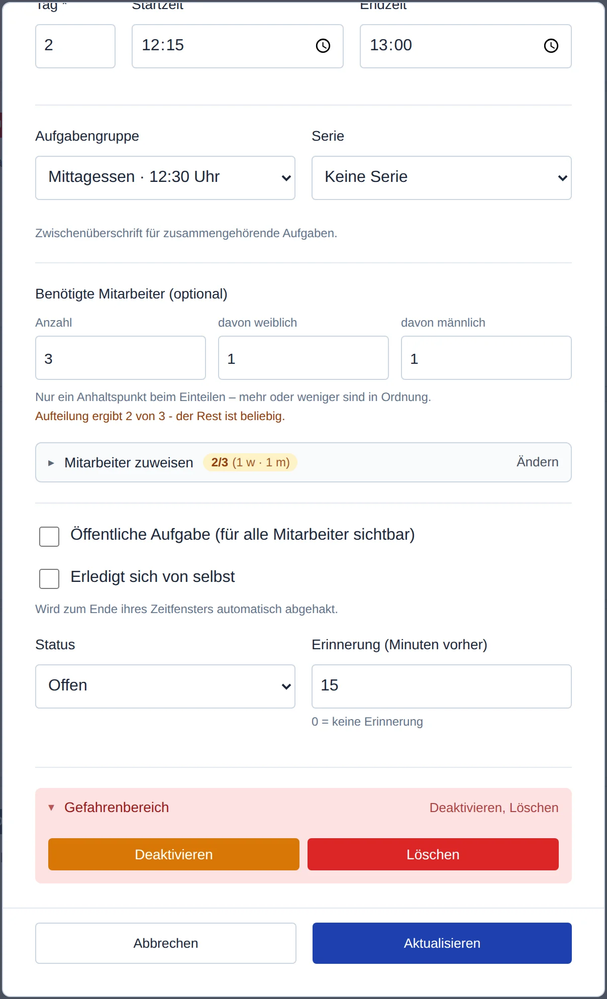
Ganz unten liegt der Gefahrenbereich:
- Deaktivieren nimmt eine Aufgabe aus dem Betrieb, ohne sie zu löschen – etwa die Kanutour bei Sturm. Sie verschwindet aus den Listen und bei den Mitarbeitern; über den Filter Deaktivierte holst du sie zurück und aktivierst sie wieder.
- Löschen entfernt die Aufgabe endgültig, samt Zuweisungen.
In der Tabellenansicht kannst du mehrere Aufgaben ankreuzen und gemeinsam löschen. Dort gibt es auch Importieren und Exportieren von Aufgaben als CSV.
Leute einteilen
Zuweisen an einer Aufgabe öffnet die Liste aller Leute im Pool. Setze Haken bei denen, die die Aufgabe übernehmen, und entferne sie bei denen, die nicht mehr dabei sind – gespeichert wird genau die Auswahl.

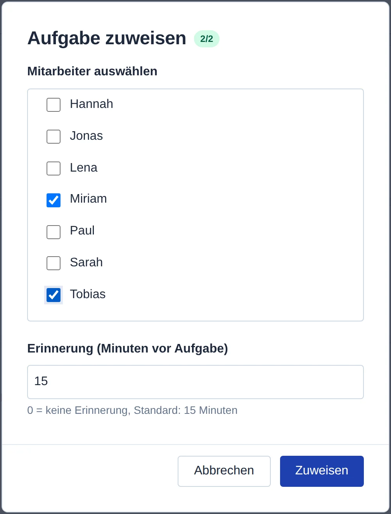
Die Plakette neben dem Titel zeigt eingeteilt / benötigt. Gelb heißt: es fehlt noch jemand. Grün heißt: die Zahl ist erreicht. Gesperrt wird nichts – du darfst mehr oder weniger Leute einteilen. Die Aufteilung 1 w · 1 m ist nur ein Hinweis für dich; die App führt kein Geschlecht in den Profilen und prüft das nicht nach.
Die Erinnerung gilt für die Leute, die du hier einteilst (Standard 15 Minuten vor dem Start). Jeder kann sie später für sich selbst anders stellen.
Vier Wege zur Einteilung
| Weg | Gut für |
|---|---|
| Zuweisen an der Aufgabe | eine Aufgabe, mehrere Leute |
| Feld Mitarbeiter zuweisen im Aufgabenformular | gleich beim Anlegen |
| Pool → Aufgabenzahl einer Person → Zuweisen | eine Person, mehrere Aufgaben |
| Serie | ein festes Team für wiederkehrende Dienste (siehe Gruppen und Serien) |
Was noch offen ist, zeigt der Filter Nicht eingeteilt: die Zahl daran sind die Aufgaben mit weniger Leuten als benötigt – oder, ohne Bedarfsangabe, ganz ohne Leute. Einzelne Zuweisungen entfernst du in der Tabellenansicht mit dem ✕ am Namen.
Karten oder Tabelle
Dieselben Aufgaben gibt es in zwei Ansichten: Karten zeigen viel zu jeder Aufgabe, die Tabelle viele Aufgaben auf einen Blick. Welche beim Öffnen kommt, stellst du in den Einstellungen ein.

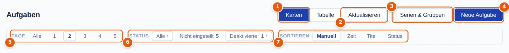
- Karten / Tabelle – Ansicht wechseln.
- Aktualisieren – neu laden. Meist unnötig: Änderungen anderer erscheinen von selbst.
- Serien & Gruppen – siehe Gruppen und Serien.
- Neue Aufgabe.
- Tage – alle Tage oder einen einzelnen. Die Auswahl bleibt beim nächsten Öffnen erhalten.
- Status – Alle, Offen, In Arbeit, Erledigt, Überfällig. Daneben Nicht eingeteilt und Deaktivierte mit drei Möglichkeiten: Ausblenden, Mit anzeigen, Nur deaktivierte. Die Zahlen beziehen sich immer auf den gewählten Tag und Status.
- Sortieren – Manuell ist deine eigene Reihenfolge; Zeit, Titel, Status sortieren automatisch, ein zweiter Klick dreht die Richtung um.
Eine Aufgabenkarte

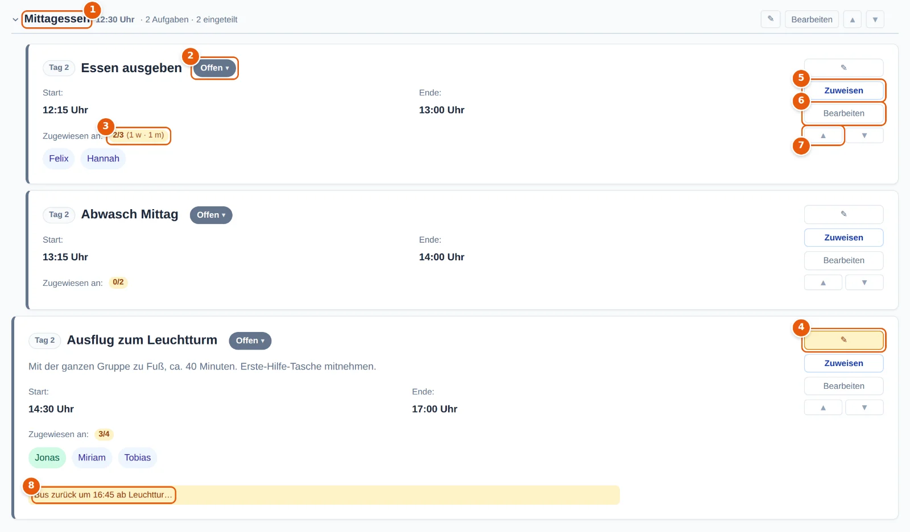
- Aufgabengruppe – Zwischenüberschrift mit Uhrzeit und Zähler. Der Pfeil links klappt sie zu; rechts sitzen Notiz, Bearbeiten und ▲▼ zum Verschieben der ganzen Gruppe.
- Status – ein Klick öffnet das Statusmenü (siehe Status und Überblick).
- Personalbedarf – eingeteilt / benötigt, gelb solange jemand fehlt.
- Notiz – ✎ öffnet die Notiz; gelb, wenn es eine gibt.
- Zuweisen.
- Bearbeiten.
- ▲ ▼ – die Aufgabe in deiner manuellen Reihenfolge nach oben oder unten schieben.
- Notiztext – erste Zeile der Notiz; ein Klick zeigt sie ganz.
Der farbige Rand links verrät den Stand: grün = erledigt, rot = überfällig.
Die Tabelle

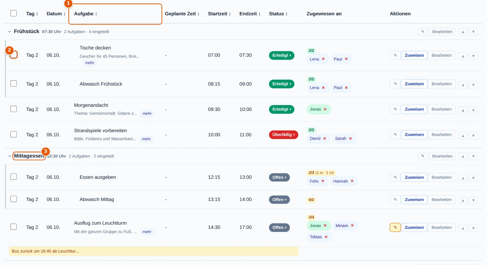
- Spaltenüberschriften – ein Klick sortiert nach dieser Spalte.
- Häkchen – Aufgaben auswählen, um sie gemeinsam zu löschen oder zu exportieren.
- Gruppenzeile – wie in der Kartenansicht, zuklappbar.
In der Tabelle hat jeder Name ein ✕ zum Austragen; lange Beschreibungen klappst du mit mehr auf.
Status und Überblick
Jede Aufgabe hat einen Status. Die Mitarbeiter setzen ihn selbst auf In Arbeit und Erledigt; als Leitung kannst du jeden Status jederzeit ändern – mit einem Klick auf die Statusplakette oder im Formular.

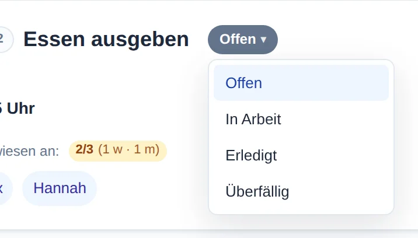
| Status | Bedeutung |
|---|---|
| Offen | noch nicht begonnen |
| In Arbeit | jemand ist dran |
| Erledigt | fertig |
| Überfällig | die Endzeit ist vorbei, und die Aufgabe ist nicht erledigt |
Überfällig setzt die App von selbst, sobald die Endzeit verstrichen ist; die Eingeteilten bekommen dann eine Meldung. Das geht nur bei Aufgaben mit Endzeit. Aufgaben mit Erledigt sich von selbst werden stattdessen zu ihrer Zeit abgehakt und nie überfällig.
Alles live: Was andere ändern – ein Mitarbeiter hakt ab, die Co-Leitung teilt jemanden ein –, erscheint ohne Neuladen. Ist die Verbindung weg, steht oben ein Hinweis Offline mit dem Stand der Daten. Wenn du willst, meldet die App dir Statusänderungen deiner Mitarbeiter auch als Benachrichtigung (siehe Einstellungen).
Gruppen und Serien
Gruppen ordnen den Tag, Serien verteilen Arbeit an ein festes Team. Beides findest du unter Serien & Gruppen.
| Aufgabengruppe | Serie | |
|---|---|---|
| Was ist das? | Zwischenüberschrift für einen Tagesabschnitt, z. B. „Frühstück 07:30“ | ein Team, das eine Reihe von Aufgaben automatisch bekommt, z. B. „Küchenteam“ |
| Gilt für | genau einen Tag | beliebig viele Tage |
| Enthält | Aufgaben desselben Tages | ganze Gruppen und einzelne Aufgaben |
| Wirkung | sortiert und gliedert die Liste | teilt das Team allen ihren Aufgaben zu – auch denen, die später in eine ihrer Gruppen kommen |
Aufgabengruppen

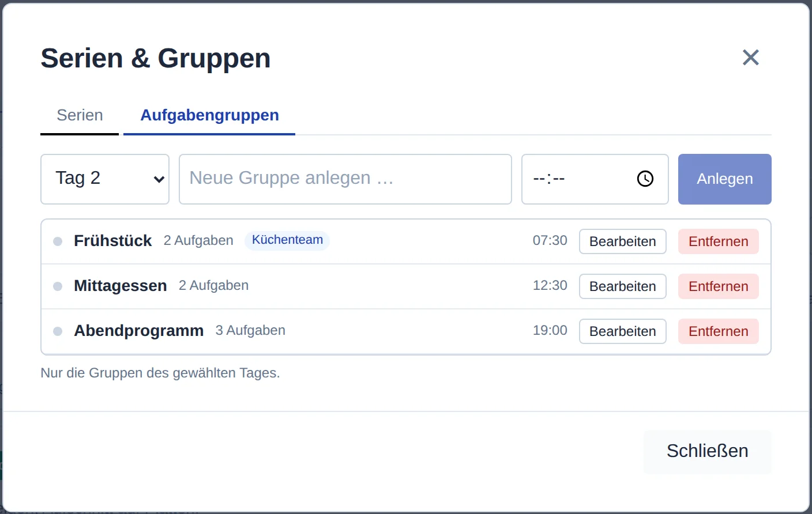
Wähle den Tag, gib einen Namen und optional eine Uhrzeit ein und klicke Anlegen. Eine Gruppe darf leer bleiben – dann ist sie einfach eine Überschrift im Tagesablauf. Unter Bearbeiten stellst du Name, Uhrzeit, Tag, Farbe und Serie ein und hakst ab, welche Aufgaben dazugehören. Dort kannst du eine Gruppe auch auf einen anderen Tag duplizieren, wahlweise mit ihren Aufgaben und Zuweisungen. Aufgaben ordnest du alternativ direkt im Aufgabenformular einer Gruppe zu.
Serien

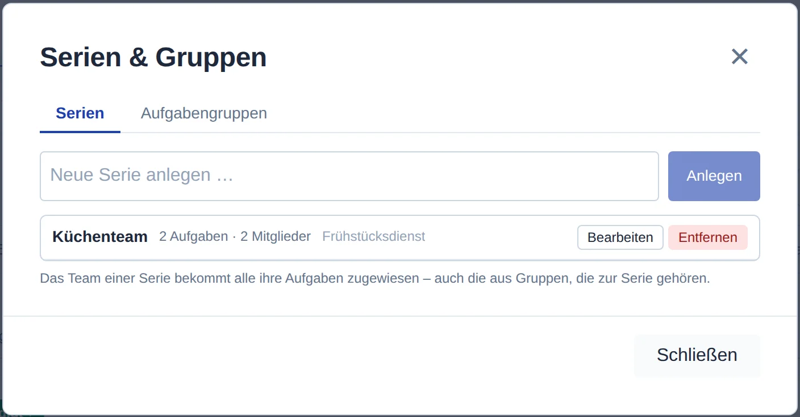
Eine Serie legst du mit einem Namen an und öffnest sie mit Bearbeiten:

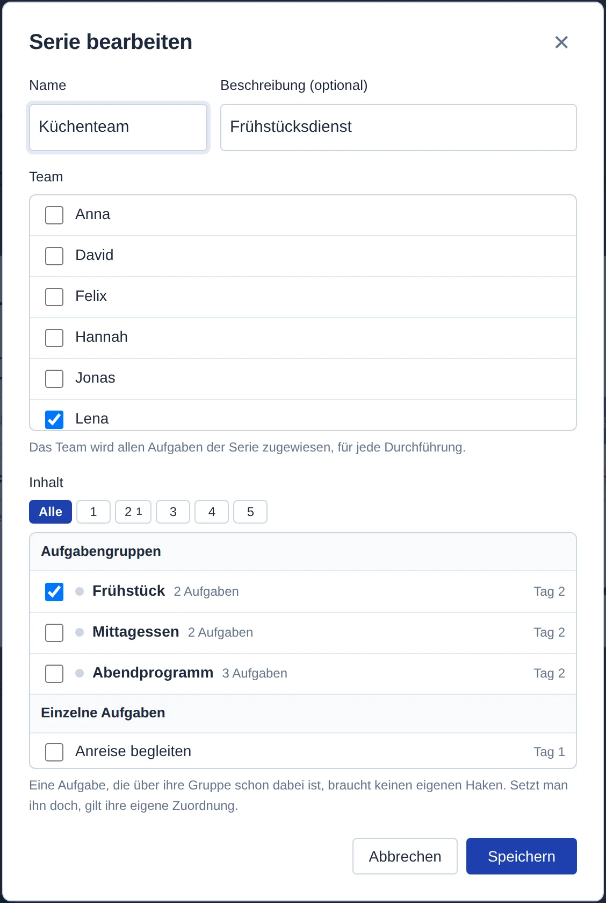
- Team – Leute aus dem Pool, die alle Aufgaben der Serie bekommen.
- Inhalt – ganze Aufgabengruppen und einzelne Aufgaben, nach Tagen gefiltert. Eine Aufgabe, die schon über ihre Gruppe dabei ist, braucht keinen eigenen Haken.
Änderst du das Team, zieht die App die Zuweisungen sofort nach. Beim Entfernen einer Serie entscheidest du, was mit ihren Aufgaben passiert:
- Nur die Serie auflösen – Aufgaben und Zuweisungen bleiben, als normale Einzelzuweisungen.
- Zuweisungen aufheben – die Aufgaben bleiben, das Team verliert sie.
- Aufgaben mitlöschen – endgültig.
Notizen der Leitung
Notizen sind kurze Zurufe nur für die Leitung – „Schlüssel liegt beim Hausmeister“, „Bus zurück 16:45“. Mitarbeiter sehen sie nie, weder in ihrer Ansicht noch in Benachrichtigungen. Was alle Eingeteilten wissen sollen, gehört in die Beschreibung.
Es gibt sie an drei Stellen: an der Veranstaltung (Kopfzeile), an jeder Aufgabengruppe und an jeder Aufgabe. Ein Klick auf ✎ öffnet das Schreibfenster:

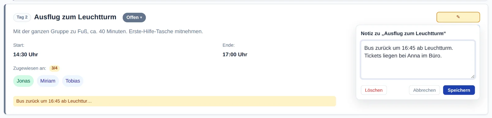
- In der Liste steht die erste Zeile; ein Klick darauf zeigt die ganze Notiz. Zeilenumbrüche bleiben erhalten.
- Ein gelbes ✎ heißt: hier gibt es eine Notiz.
- Sehen und schreiben dürfen alle, die die Veranstaltung leiten, und Admins.
- Beim Duplizieren und bei Vorlagen werden Notizen nicht mitkopiert.
Mitarbeiter verwalten
Im Reiter Mitarbeiter stehen alle Konten. Als Teamleiter verwaltest du die Mitarbeiter; Admins und andere Teamleiter kannst du sehen, aber nicht ändern.

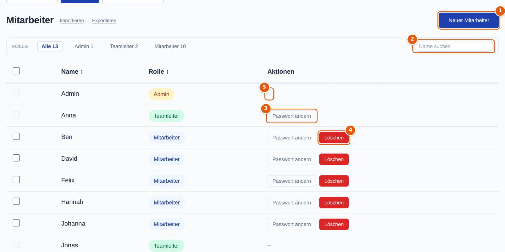
- Neuer Mitarbeiter – Name und Startpasswort vergeben. Der Name ist zugleich der Anmeldename und muss eindeutig sein.
- Suche – nach Namen filtern; links daneben nach Rolle.
- Passwort ändern – ein neues Passwort setzen, mindestens 4 Zeichen. Geht für Mitarbeiter und für dich selbst.
- Löschen – nur bei Mitarbeitern, nicht bei dir selbst.
- – – bei Admins und anderen Teamleitern gibt es keine Aktionen.
| Du darfst | Du darfst nicht |
|---|---|
| Mitarbeiter anlegen, löschen, ihr Passwort setzen | Admins oder Teamleiter anlegen, ändern oder löschen |
| dein eigenes Passwort ändern | Rollen vergeben, auch nicht deine eigene |
| Mitarbeiter als CSV importieren und exportieren | per Import andere Rollen als Mitarbeiter anlegen |
Dein eigenes Passwort änderst du auch über Menü → Passwort ändern. Wer zur Leitung werden soll, wendet sich an einen Admin.
Eigene Aufgaben und Erinnerungen
Sobald du selbst irgendwo eingeteilt bist, erscheint der Reiter Meine Aufgaben. Er zeigt dir dieselbe Ansicht wie deinen Mitarbeitern: deine Aufgaben aus allen Veranstaltungen, dazu die öffentlichen Aufgaben, bei denen du im Pool bist.

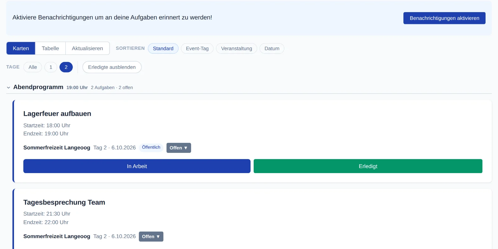
- In Arbeit und Erledigt setzen den Status mit einem Tipp.
- Mit Jonas zeigt, wer die Aufgabe noch hat.
- Sortieren nach Standard, Event-Tag, Veranstaltung oder Datum; Erledigte ausblenden räumt die Liste auf.
- Der Hinweis oben erscheint, solange Benachrichtigungen auf diesem Gerät noch nicht erlaubt sind.
Erinnerung für dich stellen
An jeder eigenen Aufgabe steht Erinnerung. Damit stellst du dir persönlich ein, wann du erinnert wirst – die Leitung sieht das nicht.

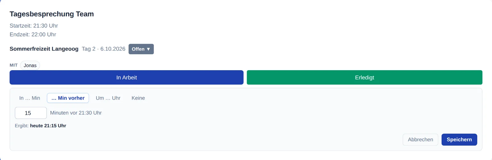
| Art | Beispiel | Hinweis |
|---|---|---|
| In … Min | in 20 Minuten | einmalig, ab jetzt gerechnet |
| … Min vorher | 15 Minuten vor 21:30 | nur bei Aufgaben mit Uhrzeit |
| Um … Uhr | am 7.10. um 09:00 | einmalig, Tag frei wählbar |
| Keine | – | keine Erinnerung für diese Aufgabe |
Unter dem Feld steht, was herauskommt (Ergibt: heute 21:15 Uhr). In der Benachrichtigung selbst kannst du sie um 30 oder 60 Minuten verschieben; auf dem iPhone fehlen diese Knöpfe. Warst du länger offline, kommen alte Erinnerungen nicht gesammelt nach.
Einstellungen
Alles Persönliche erreichst du über Menü oben rechts (am Handy ☰).

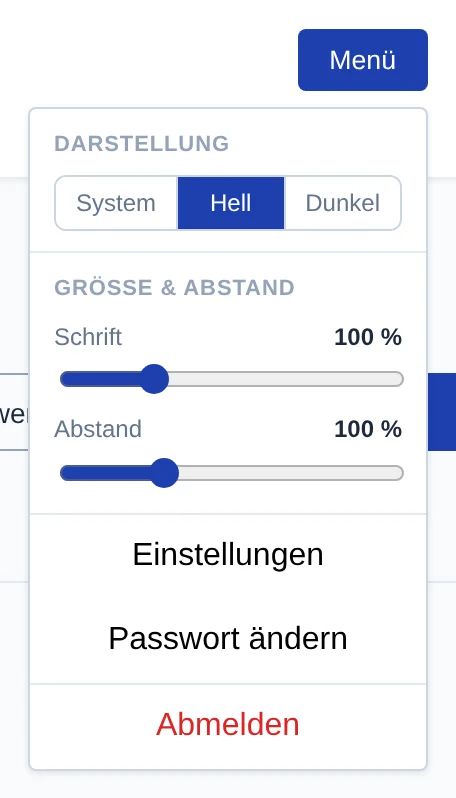
- Darstellung – System folgt dem Gerät, Hell und Dunkel legen es fest.
- Größe & Abstand – Schrift von 75 bis 175 %, Abstand von 60 bis 200 %. Gilt nur für dieses Gerät; Zurücksetzen erscheint, sobald du etwas verstellt hast.
- Einstellungen, Passwort ändern, Abmelden.

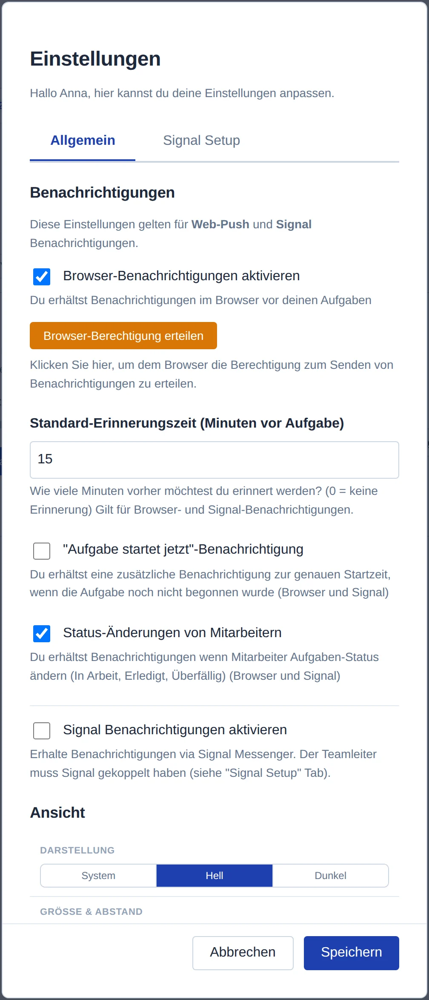
| Einstellung | Was sie bewirkt |
|---|---|
| Browser-Benachrichtigungen | Erinnerungen als Push-Meldung. Pro Gerät einmal Browser-Berechtigung erteilen; danach prüft Test-Nachricht senden, ob es ankommt. |
| Standard-Erinnerungszeit | Wie viele Minuten vorher du erinnert wirst, wenn die Aufgabe nichts anderes sagt. 0 = keine. |
| „Aufgabe startet jetzt“ | zusätzliche Meldung zur Startzeit, wenn du noch nicht angefangen hast |
| Status-Änderungen von Mitarbeitern | Meldung, wenn jemand in deinen Veranstaltungen eine Aufgabe auf In Arbeit, Erledigt oder Überfällig setzt |
| Signal Benachrichtigungen | dieselben Meldungen zusätzlich per Signal an deine Telefonnummer (+49 …) |
| Standard-Ansicht | ob Aufgaben als Karten oder Tabelle aufgehen |
Signal für dein Team einrichten
Signal-Nachrichten an Mitarbeiter verschickt die App über das Signal-Konto der Leitung. Damit deine Mitarbeiter sie bekommen, verknüpfst du einmal dein Signal:
- Menü → Einstellungen → Signal Setup → Signal einrichten.
- Auf dem Handy in Signal: Einstellungen → Verknüpfte Geräte → Gerät hinzufügen.
- Den angezeigten QR-Code scannen und mit einer Test-Nachricht prüfen.
Ist bei einer Veranstaltung niemand aus der Leitung mit Signal verbunden, gehen dort keine Signal-Nachrichten raus – Push-Meldungen kommen trotzdem.
Spickzettel
Die häufigsten Handgriffe auf einen Blick.
| Ich will … | So geht's |
|---|---|
| eine Veranstaltung anlegen | Veranstaltungen → Neue Veranstaltung |
| aus einer Vorlage starten | Veranstaltungen → Vorlage verwenden |
| eine Veranstaltung kopieren | Veranstaltung öffnen → Aktionen → Duplizieren |
| jemanden mitleiten lassen | Veranstaltung bearbeiten → Co-Teamleiter anhaken |
| Leute in die Veranstaltung holen | Mitarbeiter-Pool → + Hinzufügen |
| eine Aufgabe anlegen | Neue Aufgabe → Titel, Tag, Zeiten |
| jemanden einteilen | an der Aufgabe Zuweisen → Haken setzen |
| jemandem mehrere Aufgaben geben | Pool → Aufgabenzahl der Person → Zuweisen |
| ein festes Team für wiederkehrende Dienste | Serien & Gruppen → Serien → anlegen → Bearbeiten → Team und Inhalt |
| den Tag in Abschnitte gliedern | Serien & Gruppen → Aufgabengruppen |
| sehen, wo noch Leute fehlen | Filter Nicht eingeteilt |
| nur einen Tag sehen | Filter Tage → Zahl |
| Aufgaben umsortieren | Sortieren Manuell, dann ▲ ▼ an der Aufgabe |
| einen Status ändern | Klick auf die Statusplakette |
| eine Aufgabe vorübergehend streichen | Bearbeiten → Gefahrenbereich → Deaktivieren |
| deaktivierte Aufgaben wiederfinden | Filter Deaktivierte → Nur deaktivierte |
| mir etwas nur für die Leitung merken | ✎ an Veranstaltung, Gruppe oder Aufgabe |
| jemanden ersetzen, der ausfällt | Pool → Aufgabenzahl → Mitarbeiter austauschen |
| ein Passwort zurücksetzen | Reiter Mitarbeiter → Passwort ändern |
| an meine eigenen Aufgaben erinnert werden | Meine Aufgaben → Erinnerung |
| Benachrichtigungen auf diesem Gerät | Menü → Einstellungen → Browser-Berechtigung erteilen |
| größere Schrift | Menü → Größe & Abstand |
Farben
- gelbe Plakette: es fehlen Leute
- grüne Plakette: Bedarf erreicht
- grüner Rand: erledigt
- roter Rand: überfällig
- gelbes ✎: Notiz vorhanden
- grüne Namen: Leitung
Event Manager · Anleitung für Teamleiter · Zur App